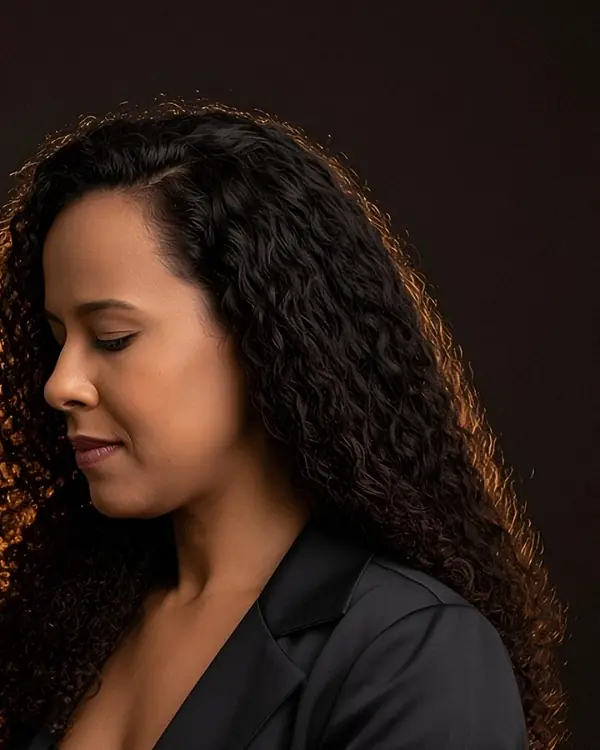

Juliana Oliveira, peluquera en Alicante

Peluquera brasileña
Corte, color, mechas, alisado y rizos. Escríbeme por WhatsApp, mándame una foto de tu pelo y te digo qué te propongo.
Servicios
Lo que hago por tu pelo
Corte
Un corte pensado para tu tipo de pelo y para cómo te peinas cada día.
Pedir cita: corteColor
Color de raíz o cambio completo, según lo que buscas y cómo está tu pelo.
Pedir cita: colorMechas
Mechas y luces con un acabado natural, que crezcan bien.
Pedir cita: mechasAlisado
Alisado brasileño. Antes miro tu pelo para ver qué alisado le va mejor.
Pedir cita: alisadoRizos
Corte y cuidado de rizos, para que se definan sin perder volumen.
Pedir cita: rizos
Te doy presupuesto al ver una foto de tu pelo.
Cita por WhatsApp
Cómo pedir cita
- Me escribesElige el servicio y mándame un mensaje por WhatsApp.
- Me mandas una fotoUna foto de tu pelo como está ahora, con luz natural si puedes.
- Te propongo el díaTe digo qué te recomiendo, el presupuesto y un hueco para la cita.

Sobre mí
Hola, soy Juliana
Soy peluquera brasileña y trabajo en Alicante. Hago corte, color, mechas, alisado y rizos.
Cada cita empieza igual: miro tu pelo, te escucho y te digo con sinceridad qué se puede hacer. Atiendo en español y en portugués.
Trabajos
Algunos resultados
Preguntas frecuentes
Antes de tu cita
¿Eres peluquera brasileña en Alicante?
Sí. Soy brasileña y trabajo como peluquera en Alicante: corte, color, mechas, alisado y rizos.
¿Haces alisado brasileño en Alicante?
Sí. Antes de darte cita te pido una foto de tu pelo para ver qué alisado encaja contigo y cómo está tu pelo ahora.
¿Trabajas con pelo rizado?
Sí. Hago corte y cuidado de rizos en Alicante, respetando tu forma natural.
¿Cuánto cuesta?
Depende de tu pelo y del servicio. Mándame una foto por WhatsApp y te doy un presupuesto antes de la cita.
¿Cómo pido cita?
Por WhatsApp, directamente conmigo. Eliges el servicio, me mandas una foto y te propongo un día.
¿Dónde atiendes?
En Alicante. Te paso la ubicación exacta cuando confirmamos la cita.
¿Hablas portugués?
Sí. Atiendo en español y también en portugués.
Dónde
En Alicante
Te paso la ubicación exacta cuando confirmamos la cita.
¿Hablamos de tu pelo?

Escríbeme por WhatsApp y mándame una foto. Te respondo yo.
Pide cita por WhatsApp